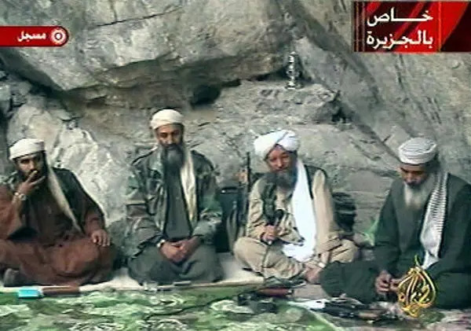

Hare and Babiak's[2] psychopathy checklist, developed for the boardroom, reads, applied to bin Laden, like a field report. Superficial charm, grandiosity, pathological lying, emotional callousness, absence of remorse, and a talent for constructing a compelling external persona over an internal void: bin Laden deployed each with precision. He cultivated deliberate asceticism: cave-dwelling, modest robes, apparent personal poverty, while directing a global operation partly funded by inherited wealth worth hundreds of millions. This paradox, ostentatious self-denial as moral authority, is a textbook instance of the "mask" Hare and Babiak describe: the psychopathic leader whose surface is engineered for followership.
Bakan's[1] framework adds the institutional dimension. Just as corporate law insulates executives from moral accountability by distributing responsibility across committees, Al-Qaeda's structure insulated bin Laden. He set strategic direction; subordinates operationalised the harm. Every participant could claim they acted for God, for the cause, for the cell; not for one man's pathological vision. This is Bakan's externalising machine: an organisation constitutionally structured to project its costs, in this case civilian death, onto the world while the architect remains buffered by bureaucratic distance.
What distinguishes bin Laden from merely ideological leaders is precisely what Hare and Babiak identify as the signature of the corporate psychopath: the gap between the expressed mission and the underlying drive for power, control, and grandiose self-validation. The theology was real to his followers. It was instrumental to him.
"Psychopaths are social predators who charm, manipulate, and ruthlessly plough their way through life, leaving a broad trail of broken hearts, shattered expectations, and empty wallets."
— HARE, R. D. & BABIAK, P. (2006). Snakes in Suits: When Psychopaths Go to Work. HarperCollins. Applied here to destructive leadership at organisational scale.
NOTE: This is an analytical application of Hare & Babiak's framework for academic purposes. It is not a clinical assessment.
Hare and Babiak describe the corporate psychopath's most dangerous tool as the mask: an engineered public persona that performs virtue, humility, or visionary purpose while concealing the exploitative mechanisms beneath. Bin Laden's mask was among the most sophisticated in recorded history of destructive leadership.
His recorded addresses, produced by Al-Qaeda's As-Sahab media unit, were staged with deliberate semiotic precision. The settings communicated austerity and piety (caves, simple robes, no visible trappings of the wealth he actually commanded). The speech register communicated scholarship and measured authority, not fanaticism. The content communicated grievance-on-behalf-of-others, never personal ambition. Each element of the mask served a specific followership recruitment function.
The paradox is total: the world's most wanted man, directing a global murder operation from a corporate command structure, presenting himself as a humble scholar fulfilling a reluctant duty to God. This is the mask Hare and Babiak describe, and at no point during his lifetime did it fully slip in public.
Bin Laden's 1996 declaration is one of the most analytically rich primary sources for Hare and Babiak's mask concept. Observe the staging: calm authority, monastic simplicity, religious framing, corporate-style mission declaration. This is persona engineering, not spontaneous expression.